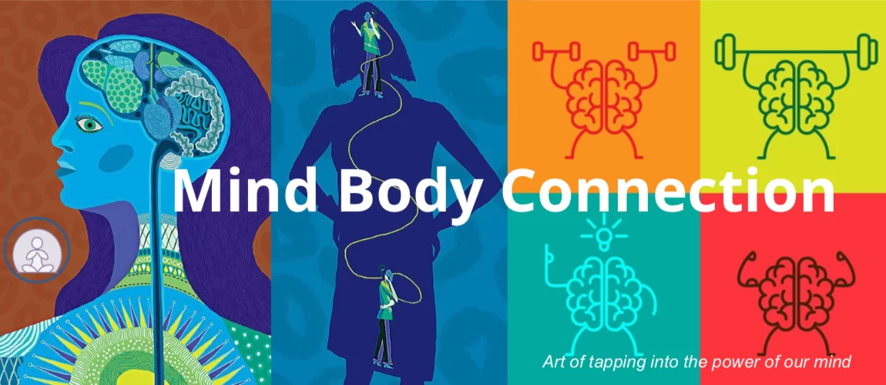

In my understanding,consciousness is the quality of awareness that we experience as human beings. It is closely connected to the physical brain and nervous system. The mind-body connection is the idea that the mind and body are not separate entities,but rather are intimately connected and interdependent. When we engage in mindful practices like meditation, we can deepen our awareness of the mind-body connection and develop a deeper understanding of our own consciousness.
